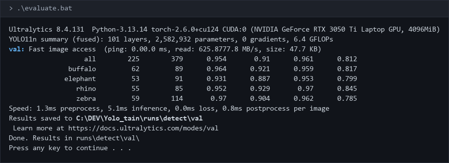
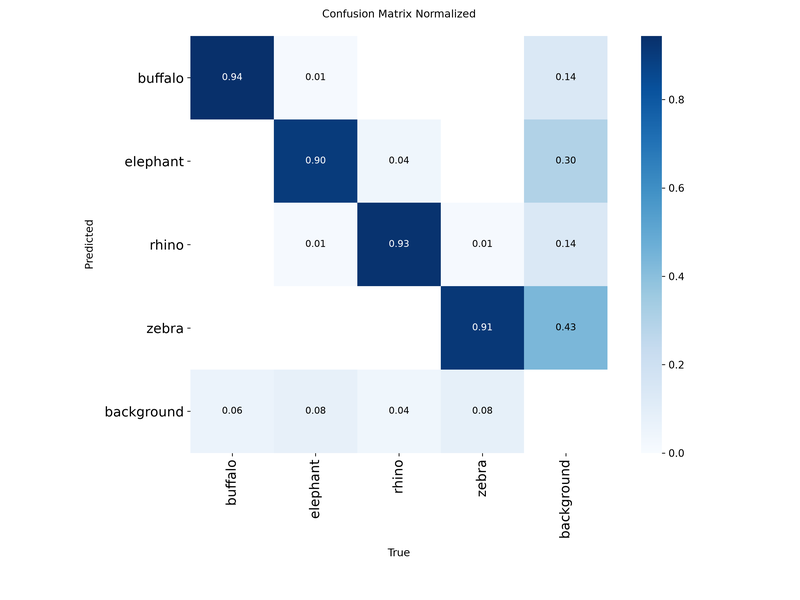
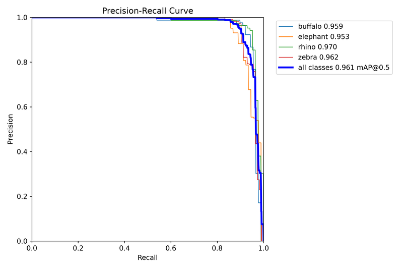
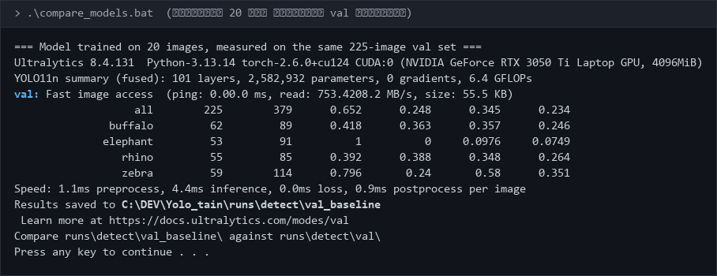

runs\detect\full\weights\best.pt (รอบที่เทรนด้วยชุดเต็ม)cd Lab5_Evaluation\scripts .\evaluate.bat

| คอลัมน์ | ความหมาย |
|---|---|
Images / Instances | จำนวนภาพ และจำนวนวัตถุที่ใช้วัดคลาสนั้น — ดูคอลัมน์นี้ก่อนเชื่อตัวเลขอื่นเสมอ ตัวเลขที่วัดจาก 1-2 วัตถุไม่มีความหมาย (เจอมาแล้วใน Lab 4) |
Box(P) Precision | ในกรอบที่โมเดลทายมา ถูกจริงกี่ % — ต่ำ = ทายมั่วเยอะ (false positive) |
R Recall | ในวัตถุที่มีอยู่จริง หาเจอกี่ % — ต่ำ = มองข้ามเยอะ (false negative) |
mAP50 | ความแม่นยำเฉลี่ย เมื่อถือว่ากรอบทับของจริง ≥ 50% (IoU ตัวเดียวกับที่ใช้ตรวจงาน label ใน Lab 3) ก็นับว่าถูก |
mAP50-95 | เฉลี่ยที่เกณฑ์ IoU 50% ถึง 95% — เข้มงวดกว่ามาก เพราะบังคับให้กรอบต้องแนบด้วย ไม่ใช่แค่ทับ ๆ กัน ตัวเลขมาตรฐานที่ใช้เทียบโมเดลกันจริง ๆ และเป็นตัวที่ YOLO ใช้เลือกว่า epoch ไหนคือ best.pt |
.\evaluate_test.bat
ชุด african-wildlife แบ่งไว้ 3 ส่วน: train (1,052 ภาพ ใช้สอน) · val (225 ภาพ ใช้เช็คระหว่างเทรน) · test (227 ภาพ ไม่เคยถูกใช้เลย)
best.pt เท่ากับว่าโมเดลถูกคัดเลือกโดยอ้อมให้เก่งกับชุด val ตัวเลขจาก val จึงมองในแง่ดีเกินจริงเสมอ| ชุด | ภาพ | Precision | Recall | mAP50 | mAP50-95 |
|---|---|---|---|---|---|
| val (เห็นระหว่างเทรน) | 225 | 0.954 | 0.910 | 0.961 | 0.812 |
| test (ไม่เคยเห็น) | 227 | 0.955 | 0.944 | 0.975 | 0.831 |
เปิด runs\detect\val\confusion_matrix_normalized.png (ตัวที่ปรับเป็นสัดส่วนแล้ว อ่านง่ายกว่าตัวที่เป็นจำนวนนับ)

| ที่เห็นในภาพ | อ่านว่าอย่างไร |
|---|---|
| แนวทแยง 0.90-0.94 | ทายถูก 90-94% ของแต่ละคลาส — ตรงกับ Recall ที่ได้ |
elephant ทายเป็น เมื่อของจริงคือ rhino = 0.04 | สับสนระหว่างช้างกับแรดเล็กน้อย ซึ่งพอเข้าใจได้ ทั้งคู่เป็นสัตว์ตัวใหญ่สีเทา ผิวหยาบ ถ่ายไกล ๆ แล้วคล้ายกัน |
คอลัมน์ backgroundzebra 0.43 · elephant 0.30 · buffalo 0.14 | False positive — โมเดลวาดกรอบขึ้นมาในที่ที่เฉลยไม่มีอะไรzebra สูงถึง 0.43 เพราะม้าลายอยู่รวมฝูง ตัวที่อยู่ไกล ๆ ในภาพมักไม่ถูก label ไว้ แต่โมเดลมองเห็นแล้วทายออกมา — ส่วนหนึ่งจึงไม่ใช่ความผิดของโมเดล แต่เป็นข้อจำกัดของ label |
แถว background0.04-0.08 ทุกคลาส | วัตถุที่โมเดลมองข้าม (false negative) — ต่ำแบบนี้ถือว่าดี |
background สูง แปลว่าควรเพิ่มภาพพื้นหลังที่ไม่มีวัตถุเข้าไปในชุดเทรน หรือปรับ conf ขึ้น ส่วนแถว background สูง แปลว่าต้องเพิ่มภาพของคลาสนั้นให้หลากหลายขึ้น
BoxPR_curve.png — แต่ละเส้นคือหนึ่งคลาส พื้นที่ใต้เส้นคือค่า mAP50 ของคลาสนั้นกราฟนี้แสดงการแลกกันระหว่าง Precision กับ Recall เมื่อเลื่อนค่า conf — ปลายซ้าย (Recall ต่ำ) คือตั้ง conf สูงจนเอาเฉพาะที่มั่นใจมาก ๆ ส่วนปลายขวาคือตั้งต่ำจนรับหมด
เส้นที่โก่งไปมุมขวาบนมากที่สุดคือคลาสที่โมเดลทำได้ดีที่สุด ใช้กราฟนี้เลือกค่า conf ที่เหมาะกับงาน — งานที่ห้ามพลาดของจริงให้เลือกจุดที่ Recall สูง ส่วนงานที่ห้ามเตือนผิดให้เลือกจุดที่ Precision สูง
ใน Lab 4 เราวัดโมเดล 20 รูปด้วยชุด val ของมันเอง (4 ภาพ) ซึ่งเล็กเกินจะเชื่อได้ คราวนี้เอามาวัดด้วยชุด val 225 ภาพชุดเดียวกับโมเดลใหญ่ จะได้เทียบกันตรง ๆ
.\compare_models.bat

| โมเดล 20 รูป | โมเดล 1,052 รูป | |
|---|---|---|
| Precision | 0.652 | 0.954 |
| Recall | 0.248 | 0.910 |
| mAP50 | 0.345 | 0.961 |
| mAP50-95 | 0.234 | 0.812 |
elephant ในภาพให้ดี: Precision = 1.000 แต่ Recall = 0.000สังเกตว่า Recall รวมตกจาก 0.910 เหลือ 0.248 — โมเดล 20 รูป มองข้ามวัตถุไป 3 ใน 4 ขณะที่ mAP50 ยังขึ้น 0.345 ซึ่งดูไม่ได้แย่จนน่าตกใจ
.\export_report.bat
สคริปต์จะหาโฟลเดอร์ผลรอบล่าสุดเอง แล้วก๊อป confusion matrix, กราฟ PR/F1/P/R และภาพเทียบ label กับผลทำนาย ไปไว้ที่ Lab5_Evaluation\report\
Collecting from C:\dev\Yolo_tain\runs\detect\val_baseline + confusion_matrix.png + confusion_matrix_normalized.png + BoxPR_curve.png + BoxF1_curve.png ... 8 file(s) copied to C:\dev\Yolo_tain\Lab5_Evaluation\report
val_baseline มา ไม่ใช่ val — เพราะรอบล่าสุดที่รันคือ Step 4 ซึ่งเป็นการวัดโมเดล 20 รูป ถ้าเผลอเอาไปใส่รายงานจะกลายเป็นรายงานผลของโมเดลที่แย่กว่า.\export_report.bat val <- ผลบนชุด val ของโมเดลชุดเต็ม .\export_report.bat val_test <- ผลบนชุด test (ตัวที่ควรใส่รายงาน)
| evaluate.bat | yolo detect val model=runs\detect\full\weights\best.pt data=african-wildlife.yaml name=valคำสั่ง val ไม่เทรนอะไร แค่เอาโมเดลไปวัดกับชุดข้อมูล แล้วเขียนกราฟทั้งหมดให้ |
| evaluate_test.bat | เพิ่ม split=test เข้าไปคำเดียว — บอกให้ใช้ชุด test แทน val (ค่าเริ่มต้นคือ split=val) |
| export_report.py | ไม่ hardcode ชื่อโฟลเดอร์ แต่ไล่หาโฟลเดอร์ที่ขึ้นต้นด้วย val แล้วเลือกอันที่แก้ไขล่าสุด — เพราะรัน evaluate ซ้ำจะได้ val2, val3 เพิ่มขึ้นเรื่อย ๆ ถ้าเขียนตายตัวจะก๊อปไฟล์เก่ามาให้ตลอด |
background ของ zebra ที่สูงถึง 0.43 เกิดจากอะไรelephant ของโมเดล 20 รูปถึงได้ Precision 1.000 ทั้งที่ใช้งานไม่ได้เลยreport\ สำหรับแนบรายงานโครงงาน